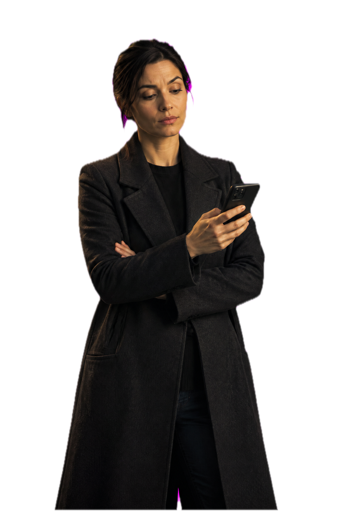
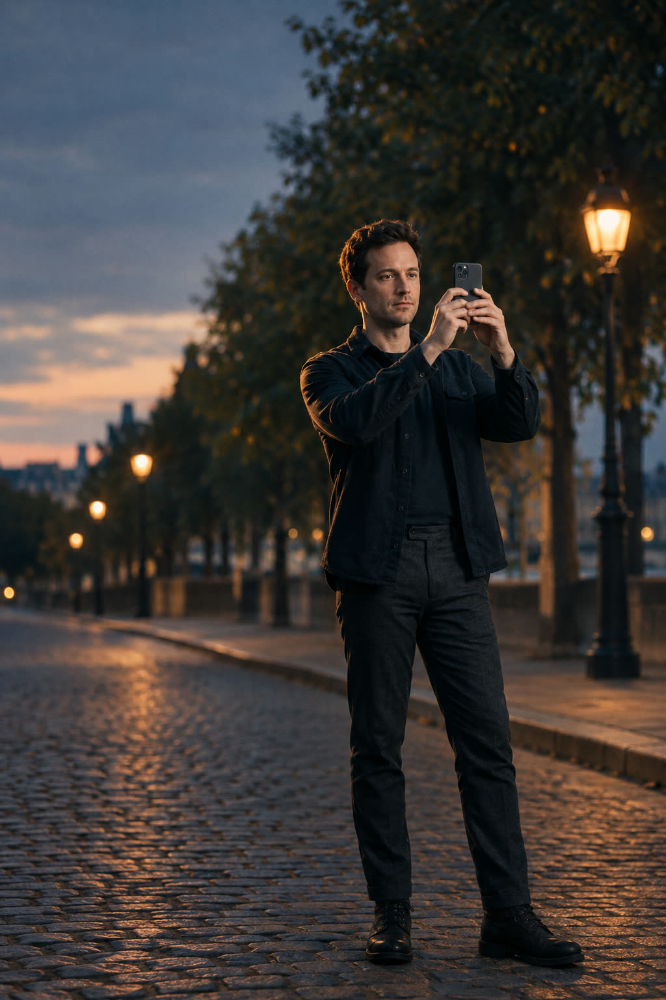
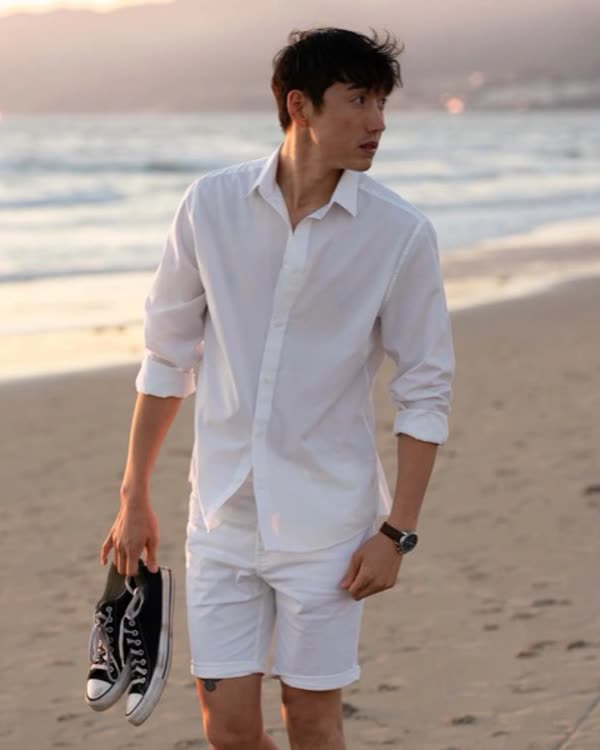

Light.
It knows where the sun is and tells you which way to turn.

Blamed for every bad photo? Poza puts a guide in the camera and a coach in your ear, for the next time you get handed the phone.

This is Poza.
It lives in the camera, watches the frame, and says one short thing at a time.
"Half a step left. Chin down a touch."Poza, to him, quietly.
That one.Her, three seconds later.
Pick a pose. A translucent outline of a different person in that pose floats over the live view, and your subject steps into it.
While you frame, Poza watches the light and the background and says one short thing at a time. Half a step left. Chin down a touch. You repeat it and take the credit.
Poza is for iPhone and still in development. The pose library keeps growing.
One thing at a time, and then it goes quiet.
It knows where the sun is and tells you which way to turn.
A lamppost growing out of a head gets called before you shoot.

A tilted frame is caught while you can still level it.
The guide sets how much of the frame the subject fills. Step in or step back.
Then it lets you shoot.
Poza is for iPhone and still in development. Leave an email and you get the first build.